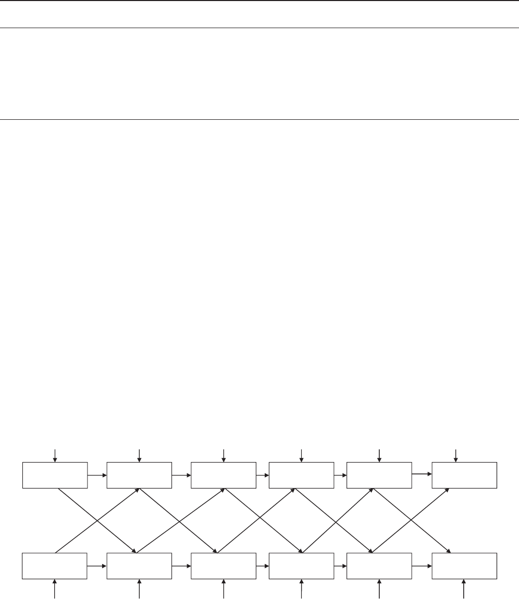
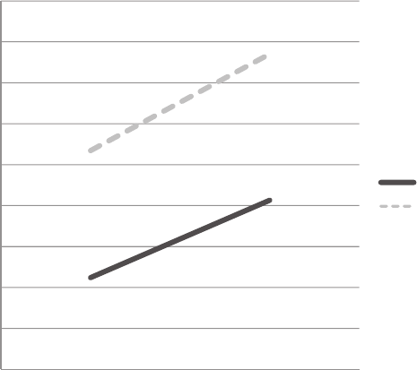

INTERPERSONAL RELATIONS AND GROUP PROCESSES
Rising Income and the Subjective Well-Being of Nations
Ed Diener
University of Illinois and The Gallup Organization, Omaha,
Nebraska
Louis Tay
Singapore Management University
Shigehiro Oishi
University of Virginia
We explored whether rising income in nations is associated with increasing subjective well-being
(SWB), with several advances over earlier work. Our methods are improved in that across time, the
same well-being questions were asked in the same order, and we employed broad and equivalent
representative samples over time from a large number of nations. We also assessed psychosocial
factors that might mediate the relation of income and SWB. We found that changes in household
income were associated with concomitant changes in life evaluations, positive feelings, and negative
feelings. The effects of gross domestic product (GDP) change were weaker and significant only for
life evaluations, perhaps because GDP was a less certain index of the standard of living of the
average household. The association of income and SWB is more likely to occur when the average
person’s material welfare accompanies rising income, when people become more satisfied with their
finances, and when people become more optimistic about their futures. People did not adapt to the
income rises during the period of years we studied, in that income rises produced SWB increases that
did not return to earlier levels. It appears that previous researchers failed to come to agreement
because of the small sample sizes of the nations, the inconsistent methods across years and surveys,
and the lack of measures of potential mediating variables. Analyses of income relative to people in
one’s nation and between-nation slopes together suggest that income standards are now largely
global, with little effect of national social comparison.
Keywords: happiness, subjective well-being, positive affect, income, money
A very important question in the behavioral and social sciences
is whether rising incomes produce a better society. Most societies
are now working toward material prosperity, and producing higher
incomes is the activity that occupies most of the time and energy
of individuals and governments. Individuals spend more time
working than in any other waking activity, and governments highly
emphasize economic growth. Thus, the issue of whether economic
growth will improve people’s subjective well-being is of both
theoretical and applied import.
Critics have expressed doubts about economic progress in terms
of environmental degradation it might cause, as well as the detri-
mental influence materialism might exert on social relationships
and human values. Richard Easterlin (1974) caused widespread
debate with his suggestion that the economic growth of nations
does not produce rising happiness in them. He pointed to the
apparent paradox that rich individuals within nations are happier
than poor ones but that rising societal incomes do not seem to be
associated with rising subjective well-being (SWB). His third
observation, that rich and poor nations do not differ in subjective
well-being, has been largely disconfirmed (e.g., Diener, Diener, &
Diener, 1995; Diener, Ng, Harter, & Arora, 2010), but the question
of whether economic growth has been accompanied by rising
“happiness” has remained contentious.
Easterlin (1974) postulated that social comparisons within na-
tions were responsible for a hedonic treadmill because people’s
standards for incomes rise when the income of others in their
society rise, and therefore there is no net gain in life satisfaction as
average societal incomes increase. However, he suggested that
cross-sectionally the richest individuals in each nation would be on
average most satisfied and that the poorest would be the least
satisfied. The paradox posed by Easterlin continues to be debated,
with Easterlin’s research supporting the idea (Easterlin, 1974;
Easterlin & Sawangfa, 2010), other research not supporting it
(Hagerty & Veenhoven, 2003; Inglehart, Foa, Peterson, & Welzel,
2008; Stevenson & Wolfers, 2008; Veenhoven & Hagerty, 2006),
This article was published Online First October 29, 2012.
Ed Diener, Department of Psychology, University of Illinois, and The
Gallup Organization, Omaha, Nebraska; Louis Tay, Behavioural Sciences
Institute, Singapore Management University; Shigehiro Oishi, Department
of Psychology, University of Virginia.
Correspondence concerning this article should be addressed to Ed Die-
ner, Department of Psychology, University of Illinois, 603 East Daniel
Street, Champaign, IL 61821. E-mail: ediener@illinois.edu
Journal of Personality and Social Psychology © 2012 American Psychological Association
2013, Vol. 104, No. 2, 267–276 0022-3514/13/$12.00 DOI: 10.1037/a0030487
267
and yet others finding mixed support (Diener, Kahneman, Tov, &
Arora, 2010).
The “Easterlin Paradox” is not only of applied importance but is
a theoretically compelling issue as well. What psychological vari-
ables might mediate or obscure the association of income and
SWB? First, income changes might not result in changes in the
actual material situation of the average household. For instance,
rising incomes in nations might go to inefficient governments or to
the rich. If the rich were to garner most of the gains of rising
societal wealth, increasing incomes might result in greater inequal-
ity and therefore harm rather than benefit the subjective well-being
of the average person. Thus, we hypothesize that increases in
income must be associated with increases in the material quality of
life of the average citizens of a society in order for increases in
SWB to occur.
Another possible reason that income might vary in its associa-
tion with rising SWB is that people’s material aspirations might
also rise, sometimes more quickly than income. If people want and
expect more income and material possessions, and therefore re-
quire more money to be satisfied, SWB might be flat or even
declining despite rising incomes. Graham and Pettinato (2002)
found that “frustrated achievers” can become less satisfied even as
their incomes rise because their aspirations increase even more
quickly than their incomes. Thus, in the current study, we assess
respondents’ satisfaction with their standard of living and analyze
whether this mediates the income–SWB association.
The third variable we assessed as potentially mediating the
income–SWB association is optimism. In spite of rising or declin-
ing incomes, people in a country might feel optimistic or pessi-
mistic about the future, including their financial future, and this
could influence their levels of life satisfaction. Optimism can be
influenced by many factors in addition to income changes, for
example expectations about future income and employment, po-
litical stability, and gains in human rights. People might experi-
ence rising income but nevertheless expect things to worsen in the
future. Thus, optimism about the future can reflect factors beyond
past changes in income that could influence people’s subjective
well-being.
In the analyses of the Easterlin hypothesis, researchers have
relied on gross domestic product (GDP) per capita to assess
income, but this measure does not directly reflect the material
prosperity of the average household. GDP has a number of blind
spots and shortcomings (Dasgupta, 1993). Not only can GDP miss
barter goods, the black market, and household production, but it
does not directly reflect how the average household is faring
economically because it gauges the overall economic growth of the
entire nation but does not index how this is apportioned. Further-
more, poor nations can find it difficult to devote the resources
needed to accurately compute GDP, and more of their economies
are likely to be in the barter and grey-market areas. Thus, in our
study we assess the changes in income in nations not only by using
GDP per capita but also by the mean incomes of households. The
measure of household income may provide a measure that more
directly reflects the material well-being of average households
within nations than does GDP.
We assessed the material standard of living in households by
assessing four material goods—two aimed at discriminating pros-
perity differences in poorer nations (having adequate money for
food and for shelter), one aimed at intermediate incomes (owning
a television, which requires electricity in the home), and one
discriminating changes in wealthier households (connection to the
Internet). Thus, we included two measures of income and an
aggregated measure of standard of living to examine the income-
relationship in greater depth. A possible mediator of the income–
SWB relation that we examine is whether rising incomes actually
result in material improvements in the standard of living for the
average citizen.
Another important psychological question regarding rising in-
come and subjective well-being is how the income is spent. One
possibility regarding rising incomes and SWB is that there could
be an association in poorer nations where greater earning power
might equate to more people being able to meet their basic needs,
for example for food and shelter. However, in wealthier nations,
rising incomes might simply result in more luxuries or status goods
and therefore not result in increasing SWB. Thus, we examined the
income–SWB association in less versus more economically devel-
oped nations.
Easterlin (1974) suggested that rising incomes are not associated
with rising SWB because people use others in their society to
evaluate their own incomes. He hypothesized that as incomes
increase, standards for adequate income rise as well. We analyzed
this possibility by evaluating the effects on SWB not only of
absolute income but also of relative incomes within nations. If
Easterlin is correct, income within one’s own reference group
ought to influence SWB, whereas absolute income should add little
or nothing in predicting changes in SWB beyond relative income.
Finally, we analyzed whether some types of SWB move in line
with Easterlin’s paradox, whereas others do not. Kahneman (1999)
drew a critical distinction between two forms of SWB—global
evaluative judgments and the ongoing momentary experience of
feelings of well-being. In recent years, several researchers have
described differences in what is associated with life evaluations
versus experienced happiness (Diener, Kahneman, et al., 2010;
Graham, Chattopadhyay, & Picon, 2010; Howell & Howell, 2008;
Inglehart et al., 2008; Kahneman, Schkade, Fischler, Krueger, &
Krilla, 2010). It might be that in evaluating their lives, people often
take their incomes into account, whereas factors such as social
relationships are critical for enjoying life. Thus, we examined the
effects of income change on distinct types of subjective well-
being, including life evaluations, positive feelings, and negative
feelings.
A possible reason for the past disparate findings is that research-
ers have had to contend with challenging methodological issues.
The measures of SWB often have not been identical across years,
and therefore differences in scores might be due to changes in
wording or to the order of questions in the surveys. Another
shortcoming with past research is that the surveys of respondents
have not always been based on representative samples of nations
but on selected groups such as those in major urban areas that
might differ across surveys. Third, there might have been inade-
quate statistical power to pinpoint effects because small homoge-
neous groups of nations have sometimes been analyzed. Finally,
the entire debate has focused on life evaluations, and the effects of
income could potentially be quite different for affect—for positive
and negative feelings (Diener, Ng, et al., 2010).
In the Gallup World Poll (GWP) that we used in this study the
measures of SWB are administered in a standardized fashion in
large numbers of nations over time, with large representative
268
DIENER, TAY, AND OISHI
samples of those nations. Furthermore, it includes measures of
possible psychological mediating variables of the income and
SWB relation. These variables might mediate the income–SWB
association but are also factors that could mask associations if they
move in a direction opposite to income during that period of time.
Thus, we are in a stronger position than previous researchers to
examine the Easterlin debate based on equivalent data over time,
as well as assessment of the psychological mechanisms that might
underlie the income–SWB association.
Summary of the Goals of the Study
In sum, we first determined whether there is an association
between changes in income and changes in several types of SWB,
using improved methods such as broad representative samples of a
very large number of diverse nations and using identical measure-
ment methods across time. We assessed income in two ways and
also measured the material prosperity of households with four
possessions covering a range of levels of wealth. Thus, we can
with more certainty determine whether material advances raise
SWB. Importantly, we assessed the psychological mediators that
have usually been omitted in past research. We measured whether
optimism and satisfaction with standard of living influence the
association between income and SWB. We also analyzed SWB
and income in poorer versus richer societies to determine whether
income rises benefit SWB when basic needs are at issue, but not
beyond that point. Finally, we analyzed relative versus absolute
income in association with SWB to examine within-nation social
comparison effects.
Method
Samples
For our analysis, we used a subset of data from the 2005 to 2011
Gallup World Poll (GWP) administered to 838,154 individuals
from 158 nations. We used countries that have had at least three
waves of data collection. Based on this criterion, 135 nations with
a total of 806,526 individuals were used for our analyses. There
was an average of 1,182 (SD ϭ 560.6) participants in each wave
per country. Each wave collected within a country was nationally
representative of the resident population 15 years of age and older.
Both rural and urban areas were covered. Telephone surveys were
conducted when telephone coverage in the nation represented at
least 80% of the population. In such instances, random digit
dialing or a nationally representative list of phone numbers was
used to create a representative sample. In countries with high cell
phone usage, a dual sampling frame was used.
In many developing nations—including Central and Eastern
Europe, Asia, the Middle East, and Africa, a geographical area
frame was used for sampling in face-to-face interviews. Primary
sampling units were stratified by population size or geography.
Random route procedures were then employed to select house-
holds. Unless an outright refusal occurred, at least three attempts
were made to reach a person in each household, spread over
different days and times of days. Within each household, respon-
dents were randomly selected by means of the Kish (1949) grid
technique.
The sample analyzed included all the inhabited world re-
gions—Asia, Europe, North America, Central America, South
America, South East Asia, the Middle East, and Oceania. Major
countries were covered, including those with the largest popu-
lations (Central Intelligence Agency, 2009) such as China,
India, the USA, Indonesia, Brazil, Pakistan, Bangladesh, Nige-
ria, Russia, Japan, Mexico, and the Philippines. Only a few
nations with large populations, such as North Korea, were
omitted due to inaccessibility. Based on country populations of
the 135 nations, we estimate that the samples we analyzed were
representative of 94% of the world’s population (Central Intel-
ligence Agency, 2012).
Measures
Subjective well-being. The cognitive and affective compo-
nents of SWB were assessed using three measures. First, life
evaluation was assessed using the Cantril (1966) Self-
Anchoring Striving Scale that asks respondents to appraise their
present lives. Responses were made ona0(worst possible life)
to 10 (best possible life) scale. This measure reflects global
evaluations of a respondent’s life. Second, positive feelings
were measured by the extent to which individuals experienced
specific positive states (“smile/laugh” and “enjoyment”) much
of the previous day (individual-level ␣ϭ.61; country-level ␣
ϭ .82). Because the analyses were conducted at the national
level, the nation level reliabilities are most relevant. Items were
assessed using a dichotomous (yes ϭ 1, no ϭ 0) format. Using
the same question and scale format, negative feelings were
measured using four negative emotion terms (“worry,” “sad-
ness,” “depression,” and “anger”; individual-level ␣ϭ.67;
country-level ␣ϭ.80).
Economic indicators. Two income variables were examined
in our analyses. GDP per capita purchasing power parity was
obtained from the International Monetary Fund (2011). Purchasing
Power Parity was used because it represents the incomes of nations
in terms of equivalent purchasing power and thus controls for
differences in cost of living across nations. Aside from GDP per
capita, we also examined the Gallup World Poll household income
measure that was administered during the survey. These scores
were subsequently transformed by the Gallup Organization to
international dollars calculated from the World Bank purchasing
power parities. We averaged the scores within countries to obtain
an index of national household income.
Possible mediators. Several possible psychological mediators
were examined. These included material goods, optimism, and
satisfaction with standard of living. Material goods were measured
using four dichotomous (yes ϭ 1, no ϭ 0) items: whether indi-
viduals had enough money for food, whether they had enough
money for shelter, if they owned a television set, and if their
household had an Internet connection (individual-level ␣ϭ.60;
country-level ␣ϭ.85). Optimism was assessed using a single
indicator of the Cantril’s Self-Anchoring Striving Scale that asked
participants to evaluate the quality of their lives 5 years in the
future. Satisfaction with standard of living was measured using a
single dichotomous (yes ϭ 1, no ϭ 0) item that asked if individ-
uals were satisfied with their current standard of living.
269
THE EASTERLIN PARADOX RESOLVED
Results
Descriptive Statistics
All analyses except those for social comparison are at the nation
level. Throughout our analyses, we analyzed income in log 10
units. Log income was used because it has the advantage that
equivalent income changes throughout the scale represent equal
percentage changes in raw income and thus represent changes as a
proportion of existing income consistent with analyses by Easterlin
and Sawangfa (2010). Many human perceptual systems are based
on log units of external stimuli, and it makes sense that an increase
of a certain number of dollars will usually mean more to a poor
person than to a wealthy person. Furthermore, log units reflect the
declining marginal utility feature of income and also typically
yield linear relations with SWB that are consistent with statistical
models assuming linearity such as correlations or regression anal-
yses (Cohen & Cohen, 1983).
Table 1 shows the means, standard deviations, Ns, and high and
low scores for nations for the key variables. Table 2 presents the
correlations across all nations and waves between the key vari-
ables. There were 135 nations and a total of 682 nation-waves.
Differences in Income Measures
Although the correlation between household income and GDP
was .916, this does not mean that GDP change and household
income change together to the same degree. Also note that al-
though GDP and household income means might be highly cor-
related at the country level, this does not necessarily mean that
GDP is a good indicator of average individual income within a
nation because income can be divided quite unevenly, and this
differs across nations. When we examined the difference between
initial and final GDP, we found that all but four nations had
positive growth. However, analysis of household income revealed
that 61 nations had negative household income declines. Some
prominent nations like the United States had a GDP growth of
$3,843 but average household income declined by $7,903; Ger-
many had GDP growth of $6,920 but household income dropped
by $4,684. This discrepancy indicated that GDP growth is not
always an accurate index of the average household income change
within a nation over a period of several years.
To estimate the percentage of variance accounted for by GDP
per capita on household income, we used hierarchical linear mod-
eling (HLM), specifically a random intercept model with a first
order autoregression as appropriate for longitudinal data. This type
of analysis is statistically optimal compared to traditional ordinary
least squares (OLS) because it accounts for autocorrelations
among country waves typically present in time series data (see
Raudenbush & Bryk, 2002). Following HLM conventions in spec-
ifying predictors across time and predictors between countries, the
Level-1 predictor was within-country changes in GDP, where GDP
for each year is subtracted from average country GDP over time.
The Level-2 predictor was average levels of country GDP over
time. In this manner, within-country changes are distinguished
from between-country differences in wealth. Average levels of
GDP predicted average levels of household income and accounted
for 88.9% of the variance. However, we found that GDP growth
accounted for only 18.3% of variance in changes in household
income. This shows that while GDP per capita is a good proxy for
between country differences in household wealth, GDP growth
over time is not synonymous with increases in average household
incomes, at least over the period of a few years. Therefore, in the
analysis of the Easterlin paradox, it is important to distinguish
between the two types of income change.
Across Time Associations of Income and SWB
Association over time. We used hierarchical linear modeling
to examine the relation between within-country income and SWB
over time. A random coefficients model was specified to account
for variability in country-level SWB. As with the previous analy-
sis, because measures of income and SWB were repeated over
time, a first-order autoregressive model was applied to account for
serial correlations between SWB measured on adjacent years. The
Level-1 predictor is within-country income over time centered
around country income, which effectively removes between-
country differences on income. Between-country differences in
income are introduced at Level-2 as a predictor instead. The focus
of our analysis is on the Level-1 within-country income as we are
interested in how income change over time is related to SWB
change apart from the effects of between-country income.
The results show that household income predicted all forms of
SWB over time. Household income change predicted changes in
Life Evaluations (ϭ0.70, p Ͻ .001, ⌬R
within
2
ϭ 6.8%), Positive
Feelings (ϭ0.06, p Ͻ .01, ⌬R
within
2
ϭ 2.3%), and Negative
Feelings (ϭϪ0.05, p Ͻ .01, ⌬R
within
2
ϭ 1.4%), with the ⌬R
within
2
representing variance accounted for in SWB over time. However,
GDP per capita change predicted only changes in Life Evaluations
(ϭ1.69, p Ͻ .001, ⌬R
within
2
ϭ 3.2%). GDP per capita change did
Table 1
Descriptive Statistic of Key Variables of Nations and Waves
Variable NMSDLowest Highest
Household income (log 10) 600 3.87 0.44 2.65 4.73
GDP per capita (log 10) 668 3.86 0.55 2.57 5.01
Life evaluation (0–10) 676 5.44 1.09 2.81 8.02
Positive feelings (0–1) 676 0.71 0.11 0.40 0.92
Negative feelings (0–1) 674 0.23 0.07 0.08 0.56
Material well-being (4 items, 0 to 100) 679 0.65 0.19 0.16 0.98
Satisfaction with standard of living (0–1) 678 0.60 0.19 0.09 0.95
Optimism for 5 years in future (0–10) 675 6.69 0.89 3.85 8.78
Note. N is for the number of nation-wave pairs. GDP ϭ gross domestic product.
270
DIENER, TAY, AND OISHI

not significantly predict changes in Positive Feelings (ϭ0.06,
ns) or Negative Feelings (ϭϪ0.05, ns) although there was a
trend in the right direction. The coefficients reported are not
standardized coefficients as is the convention in HLM analyses
because Life Evaluation is on a 0–10 scale, whereas Positive and
Negative Feelings are on a 0–1 scale. Therefore, the magnitude of
effects for household income is actually quite similar for the three
forms of SWB. Although the magnitude of the coefficients for
GDP per capita and household income are similar for feelings, the
standard errors for GDP per capita are substantially larger (0.05
versus 0.02), indicating that GDP has a more inconsistent relation-
ship with affective well-being.
Strength of relationship over time. One question that is
pertinent to the Easterlin paradox is whether the significant income
effects that were found are attenuated over time. To examine this
we used the previous analytic model and additionally included the
main effect of the variable time (coded so that Year 2005 ϭ 0,
Year 2006 ϭ 1,...,andYear 2011 ϭ 6) and the interaction
between time and country income fluctuations at Level-1. This
interaction term signifies the moderating effect of time on the
association between income fluctuations and SWB. If within-
country income changes are attenuated over time, then the inter-
action effect should be significant. The relationship between GDP
per capita and Life Evaluations was not moderated by time (ϭ
0.023, ns). Similarly, the relationships between household income
and the different dimensions of SWB did not attenuate over time
(
evaluations
ϭ 0.207, 
positive
ϭϪ0.005, 
negative
ϭ 0.023, all ns).
Thus, income rises did not cause a peak that thereafter returned to
baseline but instead raised SWB permanently across the years we
studied.
Directionality of influence. Given that we found a robust
temporal association between income and life satisfaction over
time, and this effect held over time and across types of income, we
seek to examine whether we could establish a causal interpretation
of income enhancing life satisfaction. In analytic terms, does initial
country income predict future life satisfaction, controlling for
initial life satisfaction? This is akin to establishing causality in
medical science via longitudinal prospective studies in cases where
experimentation is difficult. To this end, we conducted cross-lag
analyses, in which the effect of the previous year’s life satisfaction
on the next year’s income, not just the effect of previous year’s
income on the next year’s life satisfaction, was simultaneously
estimated. Specifically, Time t life satisfaction was predicted from
both Time t Ϫ 1 life satisfaction and Time t Ϫ 1 income as shown in
Figure 1. We used Mplus 4.20 to conduct a series of cross-lag
analysis. We fixed the effect of Time t Ϫ 1 income on Time t life
Table 2
Correlations of Variables Based on Nation–Wave Means
Variable
Household
income
GDP per
capita
Life
evaluation
Positive
feelings
Negative
feelings
Material
well-being
Satisfaction with
standard of living Optimism
Household income —
GDP per capita .916
*
—
Life evaluation .778
*
.785
*
—
Positive feelings .260
*
.292
*
.549
*
—
Negative feelings Ϫ.078 Ϫ.038 Ϫ.211
*
Ϫ.436
*
—
Material well-being .889
*
.897
*
.774
*
.236
*
Ϫ.056 —
Satisfaction with standard
of living .621
*
.601
*
.787
*
.592
*
Ϫ.231
*
.648
*
—
Optimism .334
*
.366
*
.712
*
.550
*
Ϫ.359
*
.327
*
.600
*
—
Note. GDP ϭ gross domestic product.
*
p Ͻ .01.
2007
Life Evaluation
2008
Life Evaluation
2009
Life Evaluation
2010
Life Evaluation
2007
Income
2008
Income
2009
Income
2010
Income
2006
Income
2006
Life Evaluation
2011
Life Evaluation
2011
Income
Figure 1. Cross-lag analysis on life evaluation and income. The cross-lag effect from Time t Ϫ 1 Income to
Time t Life Evaluation was fixed to be the same across the 5 years. Likewise, the cross-lag effect from Time t Ϫ
1 Life Evaluation to Time t Income was fixed to be the same across the 5 years. In addition, autoregression
coefficients were fixed to be the same across the 5 years.
271
THE EASTERLIN PARADOX RESOLVED
satisfaction to be constant across the five cross-lags. Similarly, we
fixed the effect of Time t Ϫ 1 life satisfaction on Time t income to be
constant across the five cross-lags. We did not allow for the associ-
ation of error variance for any indicators (or observed variables).
The cross-lag analysis on household income and Life Evaluation
showed reasonable model-fit,
2
(60) ϭ 170.12, CFI ϭ .959, TLI ϭ
.955, standardized root-mean-square residual [SRMR] ϭ .080. On
average, the previous year’s income had a significant positive
effect on the next year’s Life Evaluation (ϭ.09, p Ͻ .01), above
and beyond the previous year’s Life Evaluation. The previous
year’s Life Evaluation was also positively associated with the
following year’s mean income (ϭ.04, p Ͻ .01), above and
beyond the previous year’s mean income. The cross-lag model on
GDP and life evaluation fit the data well,
2
(60) ϭ 195.07, p ϭϽ
.01, CFI ϭ .972, TLI ϭ .969, SRMR ϭ .050. Previous year GDP
predicted the next year’s life evaluation (ϭ.09, p Ͻ .01), but
previous year’s Life Evaluation did not predict the following
year’s GDP (ϭϪ.002, ns).
Overall, the cross-lag analyses showed that present household
income affects future Life Evaluations and vice versa and that
present GDP per capita affects future Life Evaluations, but not the
other way around. This demonstrates that present country income
measured in both forms consistently predicts future Life Evalua-
tions. This suggests the presence of a causal relationship of income
producing Life Evaluations over time.
Mediators of Income’s Effects
If the relation between income and SWB is significant over
time, but there are many nations that are exceptions to this general
pattern, do psychological variables provide a prediction of when
income and SWB will move together? We asked two questions
relative to three potential mediating variables. First, do they reduce
the association between changing income and changing SWB
when their effects are controlled, thus providing insight into when
SWB and income move together or in opposite directions? Second,
do they add to the prediction of SWB beyond the effects of
income, suggesting that they can change independently of income
and in so doing have an effect on SWB that is not related to income
changes? Thus, we examined the third variables both as mediators
and as confounding third variables that could cover the income–
SWB associations, even though we label them only as “mediator”
variables. The following analyses are based on change scores
between each year and the following wave of data across all
country-waves.
We focused on household income because it has a more robust
association with changes in material standard of living and with
SWB. As predicted, changes in household income were correlated
significantly with changes in household material well-being (r ϭ
.23, p Ͻ .01), satisfaction with standard of living (r ϭ .13, p Ͻ
.01), and optimism (r ϭ .11, p Ͻ .05).
When the mediators were controlled, the effects of income
change added little to the variance explained in life evaluations,
although it was significant (.1%, p Ͻ .05), indicating that the
association between changes in household income and changes in
life evaluation were largely mediated by changes in material
well-being, satisfaction with standard of living, and optimism. We
directly tested mediation using path analysis, which produced
parallel results. The total indirect effects of income via the three
mediators was significant (ϭ.13, p Ͻ .001), with significant
specific indirect effects for material well-being (ϭ.02, p Ͻ .05),
standard of living satisfaction (ϭ.02, p Ͻ .05), and optimism
(ϭ.08, p Ͻ .01). The path model showed that after including the
mediators, the effect of income on life evaluations was not signif-
icant (ϭ.04, ns).
Taken together the analyses reveal that the effects of income on
SWB are mediated by material conditions and optimism, and this
accounts for the majority of effects on changes in SWB. Thus,
whether increasing income leads to increasing life evaluations
strongly depends on whether people’s material conditions are
actually improving and whether they are optimistic about their
futures. In addition, these variables changed to some extent inde-
pendently of income and predicted SWB, even with income con-
trolled, indicating that they can obscure the effects of income
changes on SWB.
As shown in Table 3, among the nations that rose on average
household income (final country wave minus initial country wave),
64% of nations rose on Life Evaluations. Importantly, when income
increases were combined with increases in material goods, standard of
living satisfaction, and optimism, the percentage of countries that
increased on Life Evaluations was 95%. However, decreases in all
factors made it highly unlikely that countries increased on Life Eval-
uations—only 10% of nations showed increases.
In other words, there were rising life evaluations in 23% more
of the nations when incomes rose versus declined over time.
Table 3
Societal Conditions That Improve SWB
Type of subjective
well-being Societal factor(s)
Combination of societal factors
Income
Income &
material goods
Income, material goods, &
standard of living
Income, material goods, standard
of living, & optimism
Life evaluations Increase % 64 67 82 95
Decrease % 41 48 33 10
Positive feelings Increase % 61 58 74 65
Decrease % 48 48 40 40
Negative feelings Increase % 50 53 41 35
Decrease % 69 70 87 80
Note. Percentages indicate the percentage of countries that increase on life evaluations, positive feelings, or negative feelings, depending on whether
various combinations of societal factors increase or decrease. SWB ϭ subjective well-being.
272
DIENER, TAY, AND OISHI

However, when the three mediators also changed in the same
direction, this difference was magnified to 85%. In other words,
85% more of the time there was an increase in life satisfaction
when nations rose on income and the mediators compared to
nations that declined on all four factors. When the mediators and
income all move in the same direction then life evaluations are
very likely to follow. Thus, the mediators helped very substantially
in predicting when nations would rise or fall in life evaluations.
There were similar trends for positive and negative feelings,
although the trend for Positive Feelings was weaker. For countries
that showed increases in all of the societal factors, a majority of
them, 65%, showed Positive Feeling increases, compared to 40%
for those showing decreases in all factors. Increases in societal
factors over time were also associated with a lower proportion of
countries having increases in Negative Feelings (30%), and de-
creases in societal factors meant that more countries showed
stronger Negative Feelings increases (80%).
Poorer Versus Wealthier Nations
We divided nations into two categories—richer and poorer
groups—to test whether the strength of association between eco-
nomic growth and the SWB of nations was greater in poorer
nations than was in wealthier nations. Poorer nations were defined
as those who during the period of the study had average per capita
incomes of $10,000 or less in USA dollars, and the richer nations
were those who had average incomes at or above $10,000. We
found that the associations between within-country income
changes and Life Evaluations changes were not significantly dif-
ferent between richer and poorer nations (GDP per capita, r ϭ .19
versus r ϭ .23; Household income, r ϭ .26 versus r ϭ .28). This
finding was also confirmed via an extension of our initial HLM
analyses of income predicting SWB. We examined whether coun-
try wealth (i.e., average country income across time) interacted
with within-country changes in income to predict SWB. Both
measures of income failed to show a significant moderation effect
of country wealth. Thus, we found no support for the idea that
income change will produce SWB change primarily in poor na-
tions. In addition, we examined our models including curvilinear
effects, but these effects were quite weak and almost always
nonsignificant.
1,2
Social Comparison Within Nations
We examined standardized household income across nations
and within nations to compare the extent to which absolute or
relative income contributes to Life Evaluations, respectively.
These analyses were conducted on individual respondents, not
nations. Because of the large sample size of about 800,000 indi-
viduals, relative income significantly predicted Life Evaluations
(ϭ.01, p Ͻ .001) beyond absolute income (ϭ.42, p Ͻ .001)
but added virtually zero incremental variance. Consistent with the
regression results, zero-order correlations indicate that the associ-
ation of relative income and Life Evaluations is slightly positive
when raw income is not controlled (rs ϭ .02, p Ͻ .001), although
much weaker than the association of raw income with Life Eval-
uations (r ϭ .42, p Ͻ .001). Thus, there is no evidence here that
income relative to others in one’s country is a key determinant of
global Life Evaluations beyond one’s absolute income. Indeed, the
analyses indicate that absolute income effects are strong.
Social comparison effects can also be examined by analyzing
the slopes between income and SWB within nations and compar-
ing those slopes with the slope between mean income and mean
SWB across nations. If Easterlin’s analysis is correct, the slope
should be small or nonexistent across nations. At the very least, the
slope ought to be much steeper within nations than between them.
In fact, we found the opposite, with the mean average slope within
nations being 1.44 between household income and life evaluations,
while the slope between nations was 1.95. This was consistent with
HLM using random intercepts and slopes (ps Ͻ. 001), where the
within-country income effect was (ϭ1.44, p Ͻ .001) smaller
than the between-country income effect (␥ϭ2.01, p Ͻ .001).
Aside from the income main effects, between-country income also
significantly moderated the slope of within-country income and
Life Evaluations (p Ͻ .001), with richer nations having slightly
steeper slopes than poorer countries as shown in Figure 2.
This shows that country wealth enhances the effect of individual
wealth on SWB. From Figure 2, we see that a rich person in a rich
nation would be better off than a rich person in a poor country,
possibly because of the superior infrastructure, such as good roads,
excellent hospitals, good schools, and so forth, which is often
absent in poor societies. Conversely, it might be more desirable to
be a poor person in a rich nation than in a poor one because of the
likelihood of social safety nets. Thus, nation income effects might
be stronger than the individual effects because individuals profit
not only from their average higher personal incomes but also
benefit from the advantages of living in a wealthier nation.
Discussion
There were several major findings from this study:
1. Household income increases were associated with in-
creases in life evaluations and positive feelings and with
lower negative feelings.
2. GDP per capita did not strongly correspond to changing
household incomes over time and tended to show weaker
associations with subjective well-being. Changes in it
were associated with changes in life evaluations but not
in feelings. GDP’s association with life evaluation was
weaker than that for household income.
3. Life evaluation was not only associated with income but
was influenced by changes in income. Across time, both
1
We examined this by additionally including the squared term for
within-country income over time as a Level-1 predictor in our HLM model.
This effect was not found to be significant for all forms of SWB using log
transformed GDP per capita or household income as a predictor. Similarly,
the curvilinear effect was not significant for raw GDP per capita or
household income on SWB. There was only one exception where the
curvilinear effect was significant for raw GDP per capita on Life Evalua-
tions. A negative curvilinear effect (ϭϪ0.0008, p Ͻ .05, ⌬R
within
2
ϭ
0.0%) revealed that larger income changes were associated with smaller
increases in SWB, but this did not increase the variance accounted for
beyond the linear effect.
2
We also examined raw income without using a log transformation in
our HLM analysis. Both household income and GDP per capita predicted
life evaluations over time, but neither predicted feelings.
273
THE EASTERLIN PARADOX RESOLVED

measures of income predicted future life evaluation be-
yond previous life evaluation.
4. Three factors—increasing material possessions, financial
satisfaction, and optimism—mediated the association of
income and SWB. In addition, each of the mediators
predicted life evaluations above and beyond income
changes. Thus, rising income primarily leads to changes
in SWB if it leads to more individual purchasing power,
optimism, and financial satisfaction.
5. The effects of income comparison within a person’s own
nation did not predict SWB beyond the absolute effects
of income. Furthermore, there was a steep and linear
relation of income and SWB across the nations of the
world. Taken together, these facts suggest a worldwide
standard for income.
6. We found virtually no curvilinear effects of income on
well-being, and rising income had about the same effects
on SWB in poor and wealthy nations.
7. The effects of income on SWB did not cause a temporary
rise in SWB but led to changes that endured over the
period of the study.
What can we learn about the Easterlin debate from these find-
ings? Does rising income lead to rising SWB? We found that rising
household income is significantly associated with all three forms
of subjective well-being. GDP per capita is a less than optimal
measure of household income, but rises in it are associated with
significant rises in life evaluations. The most consistent result is
that income is associated with life evaluations over time. Our
findings point to several likely suspects in why Easterlin failed to
find effects of rising income on SWB.
One reason that Easterlin might have failed to find an income
effect on SWB was that he relied solely on GDP, which is an
indirect indicator of the material well-being of the average house-
hold. Indeed, we found that GDP per capita growth over a period
of a few years does not reliably translate to increases in household
income. Although household income and GDP per capita were
highly correlated cross-sectionally, GDP per capita change ac-
counted for only about 18% of the variance in household income
change. Thus, GDP per capita is not sensitive enough over a short
period to reflect changes in household standards of living.
Another reason that Easterlin likely did not uncover effects is
that although across a very large and representative sampling of
nations there is an income effect on SWB, there were many nations
that did not show this pattern. Thus, it is also possible that
Easterlin failed to find effects because he used relatively small
numbers of nations or homogeneous sets of nations. We could
point to nations where income and SWB did not move together and
others where they did. If rising incomes sometimes but not always
produce rising subjective well-being, why is this so? We found that
changes in optimism partially mediate income’s effects, but opti-
mism also has an effect beyond income. Thus, changes in the
optimism of nations that do not result from increasing income can
move life satisfaction in a different direction from income changes.
The same is true of satisfaction with standard of living.
Finally, rises in GDP must result in a higher standard of living
for the average citizen and not just wealthy individuals for income
to influence SWB. In the long run, GDP growth probably results in
a rising standard of living for most people, but the effects of
income growth may have less effect on SWB if they are divided
quite unequally in the society. Finally, we found weaker effects of
income on feelings than on life evaluations, and this makes it
plausible that findings for “Happiness” measures, which have
sometimes been used in the Easterlin debate, are less responsive to
income changes than purer life evaluation measures.
3.0
3.5
4.0
4.5
5.0
5.5
6.0
6.5
7.0
7.5
Within-country poor (-1 SD) Within-country rich (+1 SD)
Life EvaluaƟons
Poor naƟons (-1 SD)
Rich naƟons (+1 SD)
Figure 2. Within and between country comparisons.
274
DIENER, TAY, AND OISHI
We discovered that people did not adapt to income increases
during the period of 7 years that we studied. That is, people did not
react positively to income increases but then in ensuing years drop
back to their former levels of SWB. The fact that higher levels of
SWB were sustained is important because it suggests that people
are not necessarily on a hedonic treadmill when it comes to
income. However, local social comparison or a world standard, not
one’s past income, might be the most relevant standard by which
people judge their incomes, and these could lead to a treadmill that
does not result from over-time adaptation.
We found that social comparison within one’s nation was not a
primary determinant of SWB (see however, Luttmer, 2005). On
the other hand, it may be that a global standard of income now
exists because nations across the globe show a linear pattern of
SWB and income, and the addition of relative income within
nations and income groups added only a small amount to the
prediction of life evaluations.
Beccetti, Castriota, and Giachin (2010) suggested that people
now compare against a global standard of income set by the richest
nations rather than only relying on people immediately around
them. Beccetti et al. found that people’s life satisfaction depends
on their monetary distance from the richest nations. Thus, nations
can become less happy even if they grow in income if they fall
further behind the richest countries. The authors suggested that the
richest nations set the standard for desirable income, and this might
be a relatively recent occurrence due to the ubiquity of television
and other global media. An alternative explanation for the world-
wide standard is that income is largely spent on things such as
food, shelter, health, and goods than are inherently evaluable (Hsee
& Zhang, 2010) rather than purely comparative. An important task
for future research is to examine these two explanations because
their implications are profound and quite different in terms of the
effects of world economic growth.
We examined raw or absolute income as well as log income.
Our primary focus was on log income for several reasons. First,
this is what Easterlin used and what has been employed throughout
the Easterlin debate. Second, log income has the advantage of
tending to be more consistent with statistical assumptions as it
produces more normal distributions of income. Third, log income
results in changes being of equal percentages throughout the scale
and thus takes into account the declining marginal utility of
money. Log income reflects the idea that it is likely to take greater
amounts of money to make a difference to a wealthy person versus
a poor person. However, one can also make arguments in favor of
using raw income, such as the fact that specific items cost essen-
tially the same amount regardless of one’s income. Thus, we
analyzed raw income and found that both types of raw income
were associated with life evaluations but not feelings. Thus,
these results mirrored the general log income findings in sug-
gesting that income influences life evaluations but has weaker
effects on feelings.
An important avenue for future research is to determine why
rising incomes have weak effects on positive feelings such as
enjoying life. One would imagine that enjoyable activities such
as fine food, travel, and better health, as well as comforts such
as more reliable heating and cooling, might raise the enjoyment
of life. One possible reason that income might in general not
produce higher enjoyment of life is that income-producing work is
less enjoyable than social leisure (Kahneman, Kruger, Schkade,
Schwartz, & Stone, 2004). Kahneman et al. (2004) found that
higher income women enjoyed both work and leisure more than
poorer women. However, because richer women worked longer
hours, and work was on average less enjoyable than leisure, the
benefits of income were largely canceled. Social factors such as
trust and lack of corruption might be the primary causes of positive
feelings and explain why they did not change with income as
reliably as did life evaluations. However, it is also possible that
less reliable measures of feelings or stronger homeostatic forces
for feelings are the reason that they did not change as reliably with
income in this study. Thus, the relation of income change and
changes in feelings is a very important avenue for future research.
There are other factors that may affect the association of income
and SWB. For example, Clark (2010) found that self-employment
is associated with higher life satisfaction but is declining in eco-
nomically developed nations. Furthermore, rising incomes should
not result from foregoing quality social relationships because in
this case enjoying life might likely decrease despite rising in-
comes. In retrospect, it was perhaps naïve for scientists to expect
that there would be an automatic input–output association between
income and SWB. The relation between income and SWB prob-
ably does reflect to some extent the objective state of affairs, but
psychological variables such as aspirations, expectations about the
future, how people earn income, and how people spend their time
and incomes (Dunn, Aknin, & Norton, 2008; Dunn, Gilbert, &
Wilson, 2011) are likely to be critically important as well.
An important caveat in interpreting our findings is that our study
examined relatively short-term changes in income over a period of
several years, not changes over decades. Larger changes in in-
comes than we were able to observe, including over longer periods
of time where adaptation to them would be more common, might
show different patterns of association with SWB. However, in
such examinations over long periods of time it will be critically
important to have representative sampling in large numbers of
nations and identical measures that are presented in the same order
over the years.
Take Home Message
We found a significant relation between changes in household
incomes of nations and their changing SWB over time. Changes in
GDP per capita predicted changes in life evaluations but not
positive and negative feelings. Although these trends were signif-
icant, there were nations where rising income was not associated
with rising SWB. Our findings indicate that for rising income to be
most likely to influence SWB it must lead to greater optimism,
financial satisfaction, and household material prosperity. In the
cases where these factors move in the opposite direction from
income, they can mask the effects of income on SWB. Thus, where
optimism about the future is low, or aspirations for income are
rising very quickly, higher incomes may not be associated with
higher SWB. Because a worldwide standard for income seems to
exist, a very important question for future research is to determine
whether this is due to worldwide comparisons or to the fact that
people desire universally evaluable goods and services. Finally, we
did not find adaptation to changing income levels, although our
examination is confined to periods of 7 years or fewer.
275
THE EASTERLIN PARADOX RESOLVED
References
Beccetti, L., Castriota, S., & Giachin, E. (2010). Beyond the Joneses:
Inter-country income comparisons and happiness. Manuscript submitted
for publication.
Cantril, H. (1966). Pattern of human concerns. New Brunswick, NJ:
Rutgers University Press.
Central Intelligence Agency. (2009). The world factbook 2009. Retrieved
from https://www.cia.gov/library/publications/the-world-factbook/
index.html
Clark, A. E. (2010). Work, jobs, and well-being across the millennium. In
E. Diener, J. Helliwell, & D. Kahneman (Eds.), International differences
in well-being (pp. 436–468). Oxford, England: Oxford University Press.
doi:10.1093/acprof:oso/9780199732739.003.0014
Cohen, J., & Cohen, P. (1983). Applied multiple regression/correlation
analysis for the behavioral sciences (2nd ed.). Hillsdale, NJ: Erlbaum.
Dasgupta, P. (1993). An inquiry into well-being and destitution. Oxford,
England: Clarendon Press.
Diener, E., Diener, M., & Diener, C. (1995). Factors predicting the sub-
jective well-being of nations. Journal of Personality and Social Psy-
chology, 69, 851–864. doi:10.1037/0022-3514.69.5.851
Diener, E., Kahneman, D., Tov, W., & Arora, R. (2010). Income’s asso-
ciation with judgments of life versus feelings. In E. Diener, J. Helliwell,
& D. Kahneman (Eds.), International differences in well-being (pp
3–15). Oxford, England: Oxford University Press. doi:10.1093/acprof:
oso/9780199732739.003.0001
Diener, E., Ng, W., Harter, J., & Arora, R. (2010). Wealth and happiness
around the world: Material prosperity predicts life evaluation, whereas
psychological prosperity predicts positive feelings. Journal of Person-
ality and Social Psychology, 99, 52–61. doi:10.1037/a0018066
Dunn, E. W., Aknin, L., & Norton, M. I. (2008). Spending money on others
promotes happiness. Science, 319, 1687–1688. doi:10.1126/science
.1150952
Dunn, E. W., Gilbert, D. T., & Wilson, T. (2011). If money doesn’t make
you happy then you probably aren’t spending it right. Journal of Con-
sumer Psychology, 21, 115–125. doi:10.1016/j.jcps.2011.02.002
Easterlin, R. A. (1974). Does economic growth improve the human lot?
Some empirical evidence. In P. A. David & M. W. Reder (Eds.), Nations
and households in economic growth (pp. 89–125). New York, NY:
Academic Press.
Easterlin, R. A., & Sawangfa, O. (2010). Happiness and economic growth:
Does the cross section predict time trends? Evidence from developing
countries. In E. Diener, J. Helliwell, & D. Kahneman (Eds.), Interna-
tional differences in well-being (pp. 166–216). Oxford, England: Oxford
University Press. doi:10.1093/acprof:oso/9780199732739.003.0007
Graham, C., Chattopadhyay, S., & Mario, P. (2010). The Easterlin and
other paradoxes: Why both sides of the debate may be correct. In E.
Diener, J. Helliwell, & D. Kahneman (Eds.), International differences in
well-being (pp. 247–288). New York, NY: Oxford University Press.
Graham, C., & Pettinato, S. (2002). Happiness and hardship: Opportunity
and insecurity in new market economies. Washington, DC: The Brook-
ings Institution.
Hagerty, M., & Veenhoven, R. (2003). Wealth and happiness revisited—
Growing national income does go with greater happiness. Social Indi-
cators Research, 64, 1–27. doi:10.1023/A:1024790530822
Howell, R. T., & Howell, C. J. (2008). The relation of economic status to
subjective well-being in developing countries: A meta-analysis. Psycho-
logical Bulletin, 134, 536–560. doi:10.1037/0033-2909.134.4.536
Hsee, C. K., & Zhang, J. (2010). General evaluability theory. Perspectives
on Psychological Science, 5, 343–355. doi:10.1177/1745691610374586
Inglehart, R., Foa, R., Peterson, C., & Welzel, C. (2008). Development,
freedom, and rising happiness: A global perspective (1981–2007). Per-
spectives on Psychological Science, 3, 264–285. doi:10.1111/j.1745-
6924.2008.00078.x
International Monetary Fund. (2011). World Economic Outlook Database:
April 2011 edition. Retrieved from http://www.imf.org/external/pubs/ft/
weo/2011/01/weodata/index.aspx
Kahneman, D. (1999). Objective happiness. In D. Kahneman, E. Diener, &
N. Schwarz (Eds.), Well-being: The foundations of hedonic psychology
(pp. 3–25). New York, NY: Russell Sage Foundation.
Kahneman, D., Krueger, A. B., Schkade, D. A., Schwarz, N., & Stone, A.
(2004). A survey method for characterizing daily life experience: The
day reconstruction method (DRM). Science, 306, 1776–1780. doi:
10.1126/science.1103572
Kahneman, D., Schkade, D. A., Fischler, C., Krueger, A. B., & Krilla, A.
(2010). The structure of well-being in two cities: Life satisfaction and
experienced happiness in Columbus, Ohio, and Rennes, France. In E.
Diener, J. Helliwell, & D. Kahneman (Eds.), International differences in
well-being (pp. 16–33). Oxford, England: Oxford University Press.
Kish, L. (1949). A procedure for objective respondent selection within the
household. Journal of the American Statistical Association, 44, 380–
387.
Luttmer, E. F. P. (2005). Neighbors as negatives: Relative earnings and
well-being. Quarterly Journal of Economics, 120, 963–1002.
Raudenbush, S. W., & Bryk, A. S. (2002). Hierarchical linear models:
Applications and data analysis methods (2nd ed.). Thousand Oaks, CA:
Sage.
Stevenson, B., & Wolfers, J. (2008). Economic growth and happiness:
Reassessing the Easterlin Paradox. Brookings Papers on Economic
Activity, Spring, 1–87.
Veenhoven, R., & Hagerty, M. (2006). Rising happiness in nations 1946–
2004. Social Indicators Research, 79, 421–436.
Received September 28, 2011
Revision received April 25, 2012
Accepted August 20, 2012 Ⅲ
276
DIENER, TAY, AND OISHI